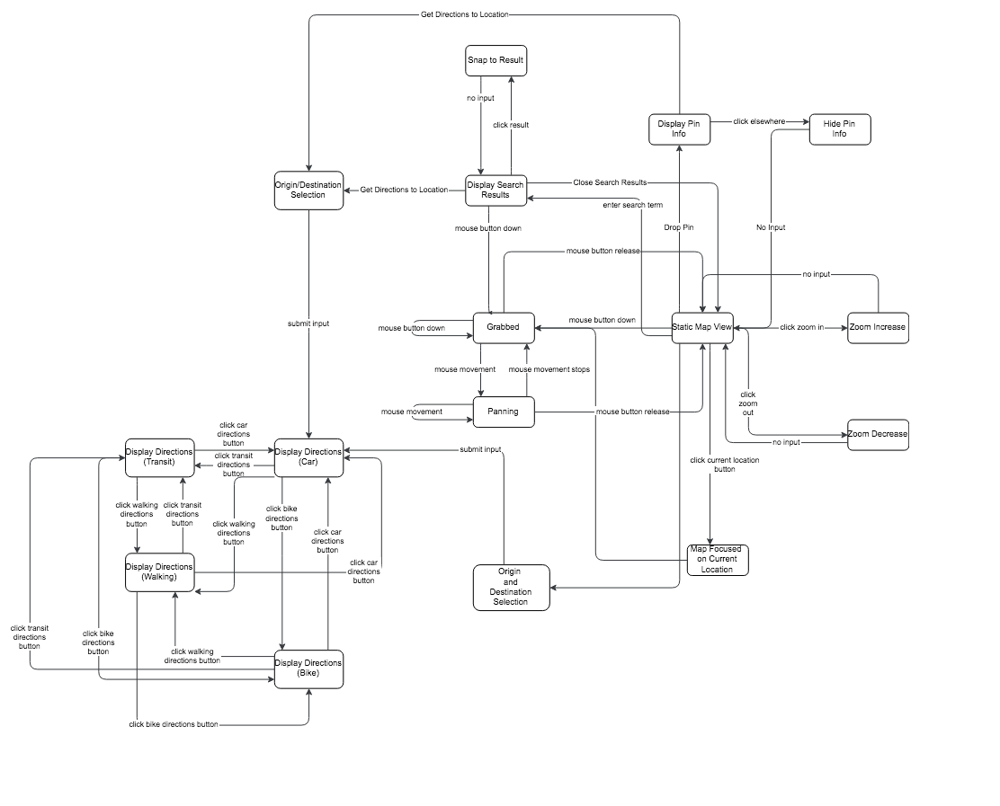

Map
- Contributor
with the popularization of mobile technology, maps have become essential interface components in a wide range of applications.
Typical Appearance
Across platforms, maps demonstrate a number of common characteristics in their appearance. Namely, maps will give some indication of the scale at which they are currently being viewed, a means of marking points of interest, some mark which denotes the location of the user, and a rendered representation of the geography to which the map corresponds (either in drawn-map form or satellite form).
Typical Behavior
The primary function of any embedded map is to demonstrate some location in space. Maps implement behaviors such as:
- Movement: the ability to zoom, pan, and rotate the map (sometimes in 3-D space)
- Search: the ability to search for particular locations in the map
- Marking: the ability to point to and mark locations of interest
- Directions: maps typically implement a routing function that will display to the user a route between two points
- Snap to Current Location: maps allow the user to snap to their immediate surroundings
Events
An event is something that can happen to a user interface component. They are both conceptual and highly concrete in that events very frequently translate directly into a user interface component’s API.
Panning
The Grab: initiated by mouse button down
The grab event is initiated when the user clicks and holds their click at any non-special location on the map. The Grab is accompanied by a small piece of feedback in the form of a cursor change (at least on macOS).
The Pan: Maintained while mouse button down
While the user has grabbed the map, she may move her mouse in any direction to have the map pan in the direction of the movement. The movement of the map essentially happens in real time along with the movement of the mouse.
The Release: initiated by mouse button release
User-controlled map panning is completed when the user releases their mouse button. Depending on the implementation, the map may continue to move in the direction of its momentum when the mouse was released.

View Style Change
: initiated byclick
When the user clicks the element designated to change viewing style (satellite or map), the map will rerender in the chosen style if not already in that state.

3D View Toggle
: initiated byclick
When the user clicks on the 3D/2D view toggle button, the viewing style of the map will toggle to the opposite state. This event may be reversed by clicking the button again.
Snap To Current Location
: initiated byclick
When the user clicks the snap to current location button, the map will immediately pan and zoom to the user's location
Zoom In/Out
: initiated byclick
When the user clicks on the zoom in or out buttons, the map will animate a change in display that corresponds either to a larger or smaller scale (typically there are limits imposed upon this scale). Some applications allow for different ways to initiate the zoom event (scrolling, holding a zoom button, etc.).
Search
For the basic functionality of the search function, click here
Result Events: initiated by submit
Upon successful search submission, an embedded map will return either a list of relevant results (less specific search term), or will snap directly to the location of a specific search term. In either case, the map will display feedback in the form of a marker which indicates the positions of the returned results.
Snap to Result: initiated by click
When the user clicks on a result returned by search, the map will display additional information about the location, and in some implementations trigger the "snap to" event to that particular location.

Drop Pin
: initiated byclick or holdClick
The drop pin event allows the user to mark a specific point of interest on the map, and in turn allow for other behaviors to act upon that location (e.g. get directions to that location).
Get Directions
Get Directions to/from Specified Location: initiated by click
The get directions to/from specified location event presents a menu where the user must enter the opposite end of their journey (origin/destination respectively). This location may be selected either by a Drop Pin event or by a search result.
Origin/Destination Selection: initiated by enterText
The Origin/Destination Selection event takes a text input from the user in the corresponding text input box. As the user inputs her text, relevant location options will display. The user must enter an exact location or select from the presented location options to finalize their origin/destination selection.
Display Directions: initiated by submit
The event causes the map to draw a route between a chosen starting location and the specified location upon submission of these locations. Along with displaying the recommended route, the map will additionally present the user with an estimated time that the route would take. Some implementations allow for a different choice of route, and some display different routes depending on the user's preference for walking, public transit, or driving (e.g. Google and Apple Maps)

Get Directions: initiated by click
The Get Directions event is triggered when the user clicks the directions button, the appearance of which varies by platform. Upon click, the map component presents the user with two text input boxes: one for the origin location and one for the final destination.
Origin and Destination Selection: initiated by enterText
Each text input partially implements the search function described earlier so as to facilitate input entry and location selection
Diplay Directions
The event causes the map to draw a route between a chosen starting location and the specified location upon submission of these locations. Along with displaying the recommended route, the map will additionally present the user with an estimated time that the route would take. Some implementations allow for a different choice of route, and some display different routes depending on the user's preference for walking, public transit, or driving (e.g. Google and Apple Maps)

State Diagram
Component in Action
Variants

Priority Metrics
Learnability
The ease with which users learn to make use of a map implementation should not be prioritized relative to metrics such as efficiency, errors, and satisfaction; as long as an implementation of the map component is reasonably intuitive, users should have no trouble learning how to use it.
Efficiency
Efficiency must be highly prioritized by any implementation of the map component. Especially in mobile maps, users will desire practically instant access to directional information to get wherever it is they desire to be. If an experienced user has difficulty accessing geographic information in an efficient manner, they will likely become frustrated and possibly migrate to a different map application
Memorability
Because most technology users access geographic information on a regular basis, little emphasis should be placed on the memorability metric of map interfaces. The importance of memorability is again reduced by the relative simplicity of most map interfaces, which should not require too much memorization of operations for the typical user. The memorability metric may be considered more important in complex map implementations such as arcGis, but people tend to use such applications in a professional capacity, meaning that their use will likely be more regular and thus memorability a less important measure of usability.
Errors
A low error rate characterizes a properly usable implementation of a map interface; this relative importance can again be attributed to the prevalance of map components on mobile technologies. Mobile users of maps may be in motion when making use of a map interface, meaning that the safety of the user and of those around them could be compromised with each additional unexpected result.
Satisfaction
User satisfaction is always an important measure of usability, and maps are no different. Especially in the crowded space of map applications, all of which serve relatively the same function, developers must prioritize satisfaction in order to differentiate their implementation from those of their competitors.
Key Characteristics
Feedback
Maps are populated with a great deal of information, so in order to make users best able to understand the effects of their actions, any and all feedback must convey all relevant information in a manner both visible and simple.
Visibility
Some elements of visibility can be considered feedback, but others are distinct in their own right. Users must be able to easily identify both the features of the map itself and the signifiers of actions available to the user at any given time. Because maps can communicate so much information at once, the ability of the user to discern what they can and cannot interact with while at the same time remaining capable of interpreting the geographic information of the map is essential.
Intuitive Affordances
Maps communicate fundamentally physical information, thus interactions with a well-formed map component should mimic interactions with a physical object in order to best align with users' mental models regarding maps. This type of behavior can be seen in almost all popular map implementations; for example, Google Maps allows users to pan around the map as though they were manipulating a physical object, rather than only being able to do so with arrow keys or some kind of button interface.
Platform-Specific Instances
macOS
Zoom In/Out: initiated and maintained by pull (two fingers outward) and pinch (two fingers inward) respectively
The behavior of the zoom is essentially the same as in any other map, but the input provides the user with greater tactile feedback than other applications
Rotate: initiated and maintained by: two finger rotate
Rotation operates the same as in other applications, but can be triggered in Apple Maps not only by clicking the corresponding button on the interface itself, but also by a more tactile operation.
Drop Pin: initiated by force click
The drop pin can be initiated in Apple maps via force click, a proprietary operation